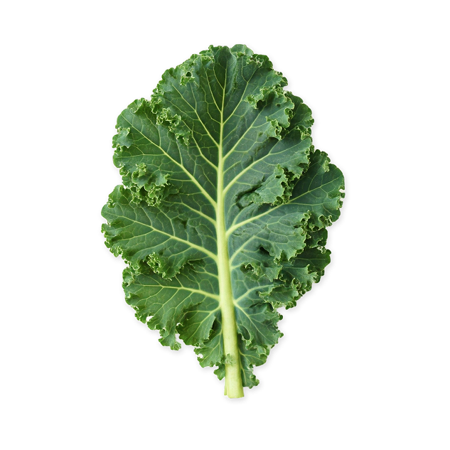

agrokruh
Veľká a Malá farma
Technológia, ktorá pestuje budúcnosť.
Vďaka Agrokruhu inovatívne vypestujete zeleninu, bylinky a kvety. A navyše – obnovujete pôdu, živíte komunitu a vraciate prírode to, čo jej patrí.
NAŠA KOMUNITA
PRINCÍPY

REGENERATÍVNE
UDRŽATEĽNÉ
EKOLOGICKÉ
Vďaka našej technológii si pestujete zeleninu, bylinky a kvety bez ťažkej techniky, chemických vstupov či ničenia pôdy. Agrokruh znamená viac života v pôde – a viac živín na tanieri.
ZISTIŤ VIACPESTOVANIE
Vypestujte si až 50 druhov chutí. Vaša úroda s Agrokruhom bude rásť v v súlade prírodou.
Zoznam plodínagrokruh
Veľká a Malá farma
Vďaka Agrokruhu inovatívne vypestujete zeleninu, bylinky a kvety. A navyše – obnovujete pôdu, živíte komunitu a vraciate prírode to, čo jej patrí.